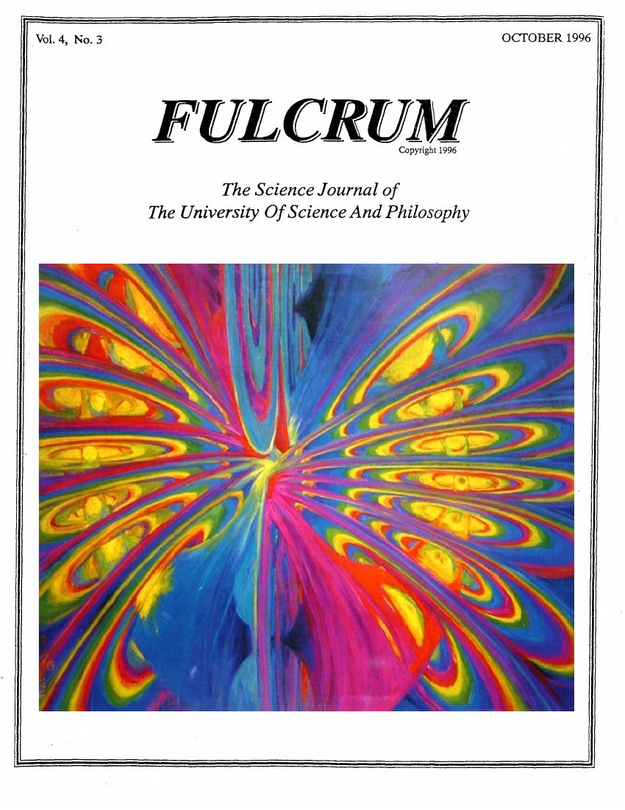
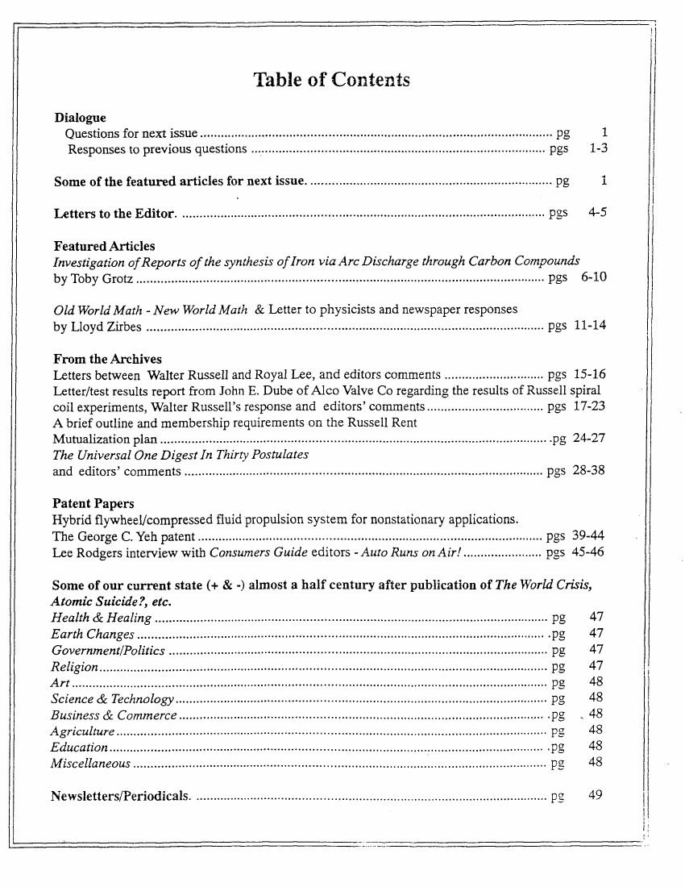
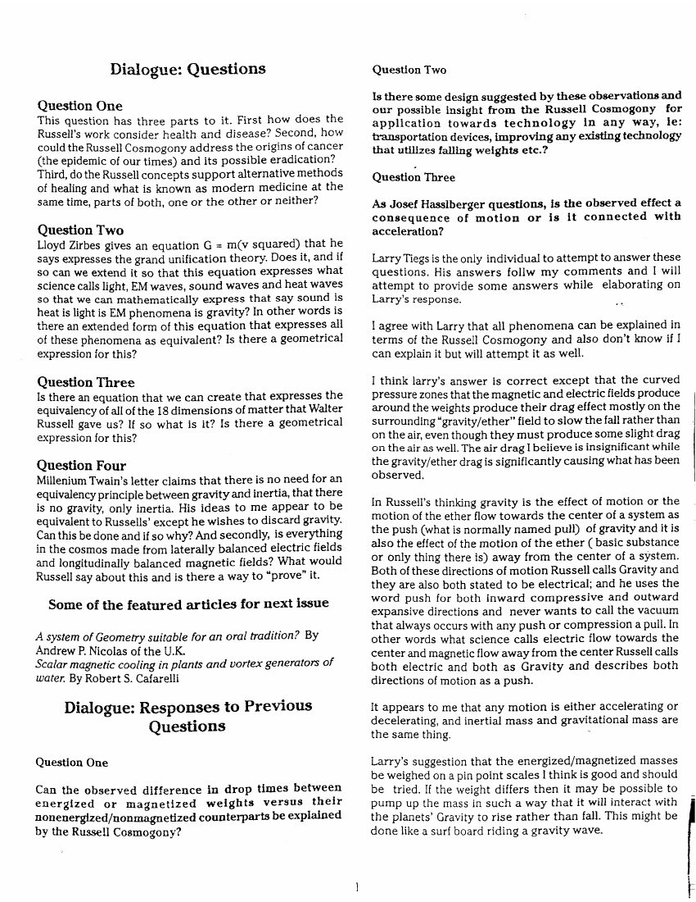

Chain of custody
Provenance
Where the scans came from, what they hash to, and what no independent source confirms.
This project holds no original paper. It holds scans, and the scans have a traceable path from USP's print journal to this repository. The path has one weak link, and this page states it plainly: almost every complete copy of these issues comes from USP itself.
The chain
- Print, 1996 and 1997. Fulcrum, the journal of the University of Science and Philosophy (USP), printed the 1958 file: the correspondence and the Alco report in Vol. 4 No. 3 (October 1996), and the engineering sheets in Vol. 5 No. 1 (May 1997).
- Scans on philosophy.org. USP later put the issues online as image-only PDF scans. The scans carry no OCR text layer, so no search engine could read the words in them. The Wayback Machine holds no capture of any Fulcrum PDF on philosophy.org before 2016, and none of V4N3 before 2022.
- Wayback capture 20240922235101 (22 September 2024). These captures are the only complete copies of the issues that a third-party archive holds. This project recovered both issues from them.
- The old URLs died. The philosophy.org
/uploads/URLs have returned 404 at least since 7 November 2025. The last date on which this project observed them live is 5 August 2025. - USP's rebuilt site. It stays live and still serves complete PDFs, through per-issue "DOWNLOAD ATTACHMENT" links to a contractor's personal SharePoint account (
netorg242520-my.sharepoint.com). On 9 September 2026 this project verified the SharePoint copy of V4N3 as byte-identical to the Wayback capture. - This repository and the Internet Archive mirror. Both issues are in
sources/here. All 21 issues (1992–1998) are mirrored as an Internet Archive item with checksums, in the original form and in a searchable copy.
Cautions
- Two other capture sets are incomplete. A 2022 Common Crawl fetch of V4N3 is truncated at 1 MiB. Common Crawl refetched both issues on 5 August 2025, and those captures are capped near 5 MiB. Neither set is usable. Scribd re-uploads of V4N3 exist, and this project did not verify their completeness.
- The SharePoint host is a personal account, so it can vanish without notice.
- Vol. 5 No. 2 (November 1997) has no complete third-party capture at all. The only known complete copy came from USP's SharePoint links, and it is in the Internet Archive mirror above.
- The 1958 test survives on the movement's own testimony. No source independent of Fulcrum documents the test, the drawings LO 8308-11 and -12, or the Maguire funding link. Both principals are real, and the biographical details check out, but the episode itself has one source.
The two issues used here
Both files are image-only scans with no text layer. The checksums are of the exact files in this repository.
| Issue | Bytes | Pages | SHA256 | Copy |
|---|---|---|---|---|
Fulcrum Vol. 4 No. 3 (October 1996)sources/fulcrum_v4n3_october_1996.pdf |
6,554,673 | 53 | 4ff27b2111d7c19c2a4d0ba4873d2c79303a789b40c1b7755220c9634e00e470 | In this repository |
Fulcrum Vol. 5 No. 1 (May 1997)sources/fulcrum_v5n1_may_1997.pdf |
36,811,079 | 138 | f2811d92457ab2c96ed53bd23d979ca95ffd3788c03d9020560456ca2e2864c4 | In this repository |
How to check a copy
Every file here is verifiable against the checksums on this page.
`` shasum -a 256 sources/fulcrum_v4n3_october_1996.pdf shasum -a 256 sources/fulcrum_v5n1_may_1997.pdf ``
The transcripts are checkable against the page scans. Each document on the documents page shows the scan beside the text, and each scan links to its full-resolution PNG. The page renders in sources/v4n3_renders/ and sources/v5n1_renders/ come from the PDFs above.
The complete journal mirror
All 21 issues of Fulcrum (April 1992 to December 1998) are mirrored, with checksums, as
one Internet Archive item. The full SHA256 list is in
verification/fulcrum_mirror_checksums.tsv.
The mirror is searchable. Each issue has a second copy with the suffix _ocr.pdf:
the same pages, with a machine-read text layer added, and the plain text of that layer beside it
as _ocr.txt. The original files are unchanged, so every checksum below still
verifies. The text layer is for search. For quotation, the transcripts on this site stay the text
of record, because the machine reading has small errors on faint typescript. Checksums for the
searchable set are in
verification/fulcrum_mirror_ocr_checksums.tsv.
| Issue file | Bytes | Pages | SHA256 | Source | Searchable copy |
|---|---|---|---|---|---|
fulcrum_v1n1_april_1992.pdf | 2,040,983 | 30 | eaa509c11389423949a55b967b40db73ab19a00012f3226503f6ef5e11f7b526 | wayback:20240922235101 | PDF · text |
fulcrum_v1n2_august_1992.pdf | 6,513,761 | 36 | 7fdd1c57063f93e56228b91cdd1311f72d08938863fb60bb04166d64cda274ee | wayback:20240922235101 | PDF · text |
fulcrum_v1n3_december_1992.pdf | 10,575,176 | 35 | 0cf18675fdea0daaa2ee9bb24a43def33489d245794d8813819e74cc633b32af | wayback:20240922235101 | PDF · text |
fulcrum_v1n4_april_1993.pdf | 2,191,003 | 36 | 60be7089edec741d099973d967c1c95076af46fa7d9987efc603b983d32fee08 | wayback:20240922235101 | PDF · text |
fulcrum_v2n1_august_1993.pdf | 2,539,525 | 36 | d99bc2f89fa2d27db5e032f1a0630dc74d798e48738fa379bef5156ecdba8cc1 | wayback:20240922235101 | PDF · text |
fulcrum_v2n2_december_1993.pdf | 2,216,904 | 38 | 3833947b1e95d68b0a03bc3de9929d4d448f6220f08f96146d28056a5cf5da0c | wayback:20240922235101 | PDF · text |
fulcrum_v2n3_february_1994.pdf | 6,169,799 | 40 | c002b5cbbd4cfcfc09f4a7bb1ca7bb648f83bc5edb90a643d91b82f8dd32c8ee | wayback:20240922235101 | PDF · text |
fulcrum_v2n4_june_1994.pdf | 3,143,808 | 36 | cf49f5a135fa80867585eb707cd65546a058d91a14f36cd5f0ae6a5d29ffa9e2 | wayback:20240922235101 | PDF · text |
fulcrum_v3n1_september_1994.pdf | 2,238,048 | 32 | 6bd8a60eeabc58a3411bc98ab20b4ac4c46bbe935a1d2148c1f423dbd231a9c4 | wayback:20240922235101 | PDF · text |
fulcrum_v3n2_december_1994.pdf | 10,289,941 | 49 | ae5317246a993fda2ebe08b1aacd7ccdbd9df5d295df31a42416d262fe14b85b | wayback:20240922235101 | PDF · text |
fulcrum_v3n3_april_1995.pdf | 3,151,642 | 40 | d09cdf97aeb0d42af78903144c7f202b4603c7a9a053b29e1220fba4e9a7382c | wayback:20240922235101 | PDF · text |
fulcrum_v3n4_july_1995.pdf | 4,856,289 | 40 | cc4b529646121638134570e829001453b1d776d517f41172ef0d19bf525b9a0b | wayback:20240922235101 | PDF · text |
fulcrum_v4n1_january_1996.pdf | 17,534,198 | 44 | 6738e4fac7e1ed673a6630a967a7fbad79192e3115f4740b22a22e30fde3bcab | wayback:20240922235101 | PDF · text |
fulcrum_v4n2_june_1996.pdf | 7,574,285 | 59 | 351f16fd3ba9b23be062239c6595676a58e7681817c210d9a0325f407f7059ac | wayback:20240922235101 | PDF · text |
fulcrum_v4n3_october_1996.pdf | 6,554,673 | 53 | 4ff27b2111d7c19c2a4d0ba4873d2c79303a789b40c1b7755220c9634e00e470 | wayback:20240922235101 | PDF · text |
fulcrum_v5n1_may_1997.pdf | 36,811,079 | 138 | f2811d92457ab2c96ed53bd23d979ca95ffd3788c03d9020560456ca2e2864c4 | wayback:20240922235101 | PDF · text |
fulcrum_v5n2_november_1997.pdf | 29,340,067 | 88 | 04b4719f55acb55afd4c642121367f1f580de48fa1783beb29a7ee6451f248a8 | USP SharePoint (rebuilt site, 2026) | PDF · text |
fulcrum_v5n3_december_1997.pdf | 25,837,517 | 86 | 3db8b3b5cbffd1034874a010538a423feaecb1e8737a4f44ab8920a53532484a | wayback:20240922235101 | PDF · text |
fulcrum_v6n1_may_1998.pdf | 30,613,113 | 106 | 7c7579bdcfc99bdc1651a7b110935de3c2b9058fda4f4f5d0598f1b277892860 | wayback:20240922235101 | PDF · text |
fulcrum_v6n2_november_1998.pdf | 26,572,798 | 79 | 3fb9c6931b7e346999b60b53e6d652acde49f52a4b29a6f12097f91c3b6970e6 | wayback:20240922235101 | PDF · text |
fulcrum_v6n3_december_1998.pdf | 28,562,591 | 107 | 92d9c7dccc3b717853c4f10a09cdcb803042a12d15109370d255385255996c1a | wayback:20240922235101 | PDF · text |
Page concordance and document map
In both issues the journal page number and the PDF page number differ by three: journal page N is PDF page N+3. The two index files below carry the full document maps, the section boundaries, and the negative findings from the page-by-page search.
Vol. 4 No. 3 (October 1996)
Source PDF: sources/fulcrum_v4n3_october_1996.pdf (53 PDF pages, image-only scan). Page offset in this section: journal page N = PDF page N+3. Renders: sources/v4n3_renders/v4n3_d-<PDFpage>.png (150 dpi; PDF 18–27 covered) and v4n3_p-01..04.png (100 dpi; issue cover, masthead, and table-of-contents pages).
| # | Document | Date | From → To | Journal p. | PDF p. | Transcript |
|---|---|---|---|---|---|---|
| 1 | Editor's note introducing Royal Lee (split head/foot) | 1996 | Fulcrum editor | 15, 16 | 18, 19 | v4n3_p15_russell_lee_tesla.md |
| 2 | Letter, Lee Engineering Company | Jan 6, 1955 | Royal Lee → Walter Russell | 15 | 18 | v4n3_p15_russell_lee_tesla.md |
| 3 | Letter re: Tesla book | Mar 20, 1954 | Walter Russell → Dr. Royal Lee | 16 | 19 | v4n3_p15_russell_lee_tesla.md |
| 4 | Cover letter for coil test report, Alco Valve Company | Nov 21, 1958 | John E. Dube → Dr. Walter Russell (CC R. Maguire) | 17 | 20 | v4n3_p17_dube_letter.md |
| 5 | "Report on Evaluation of Russell Coil" (unsigned Alco Valve engineering report; OBJECT / DESIGN / TEST #1 / TEST #2 / RESULTS / CONCLUSIONS) | undated (encl. to Nov 21, 1958) | Alco Valve Co. → Russell | 18–19 | 21–22 | v4n3_p18_evaluation_report.md |
| 6 | Response letter, 3 pp. | Nov 24, 1958 | Walter & Lao Russell → Russell Maguire (CC J. E. Dube) | 20–22 | 23–25 | v4n3_p20_russell_response.md |
| 7 | Editor's note on the coil tests + HSC Unit 11 lens claim | 1996 | Fulcrum editor | 23 | 26 | v4n3_p23_editor_note.md |
Figures search (Figs. 1–4, Drawings L08308-11 / -12)
The report cites Fig. 1 (conventional wiring), Fig. 2 (Russell wiring), Fig. 3 (test fixture), Fig. 4 (plot of pulling power vs gap), and layout drawings L08308-11 / L08308-12. The 1958 original describes all of them as "attached". This issue reprints none of them. We checked PDF pages 17–30. The archives section runs journal pp. 15–23 (PDF 18–26). Journal p. 14 (PDF 17) is the end of an unrelated "Project Stardust" gravity article. Journal pp. 24–27 (PDF 27–30) reprint the 1923 "Russell Rent Mutualization Plan" prospectus. No engineering drawings or plots appear, so no 300-dpi figure renders were necessary.
Cross-reference: Fulcrum Vol. 5, No. 1 reprints the drawings (LO 8308-11 / -12 plus detail parts LO 8308-101..-109 and -120..-122). It also reprints the Fig. 4 pull-test graph (24 VDC, Nov '58: standard coils out-pull the Russell/step coils at all gaps). See transcripts/INDEX_v5n1.md.
Section boundaries
- "From The Archives" begins at journal p. 15 (PDF 18) with the header line and the Royal Lee editor's note.
- The section ends at journal p. 23 (PDF 26). Journal p. 24 (PDF 27) starts "Russell Rent Mutualization Plan — A Brief Outline".
Key content flags
- The Nov 24, 1958 Russell letter contains the concession that the 1996 editor quotes: "any two wire coils, wound in any way whatsoever, will give equal resultant field potential…". The Russells accepted this "Dube verdict" in writing.
- Per the 1996 editor, the Russell–Lee exchange is the only archived trace of the Russell–Tesla association. The exchange does not support the "Tesla told Russell to bury his knowledge" folklore (see Notes in v4n3_p15_russell_lee_tesla.md).
Vol. 5 No. 1 (May 1997)
Source PDF: sources/fulcrum_v5n1_may_1997.pdf (138 pages, image-only scan) Page offset: journal page N = PDF page N+3 (verified: journal p. 1 = PDF p. 4; journal p. 82 = PDF p. 85) Section per TOC (PDF 3): "From the Archives — Letters between the Russells and Mr. Dube with detailed parts drawings for the Russell Test Coils and Conventional Test Coils to test Russell Coils pulling power against Conventional Coils pulling power. — pg. 82" Section extent: journal pp. 82–106 = PDF pp. 85–109 (next section, "Patent Papers," begins journal p. 107 / PDF p. 110)
Renders: sources/v5n1_renders/v5n1_p-0XX.png (150 dpi, full section PDF 85–109) and v5n1_300dpi_p-0XX.png (300 dpi, all drawing pages PDF 91–109). XX = PDF page number.
Document map
| Journal p. | PDF p. | Document | Transcript / description file |
|---|---|---|---|
| 82 | 85 | Editor's intro, "From The Archives" (Binder, 1997) | v5n1_p82_from_the_archives_intro.md |
| 83–84 | 86–87 | Letter, John E. Dube (Alco Valve Co.) → Dr. Walter Russell, Aug 25 1958 (facsimile, Alco letterhead) | v5n1_p83_dube_to_walter_russell_1958-08-25.md |
| 85–86 | 88–89 | Letter, Walter & Lao Russell → John Dube, Aug 30 1958 (re-set type) | v5n1_p85_russells_to_dube_1958-08-30.md |
| 87 | 90 | Letter, Walter & Lao Russell → John E. Dube, Oct 5 1958 (facsimile, USP letterhead) | v5n1_p87_russells_to_dube_1958-10-05.md |
| 88 | 91 | Fig. 1 — Test Fixture for Russell Solenoid (sketch; WR marginal note) | v5n1_drawings_description.md §1 |
| 89 | 92 | Fig. 2 — Wiring Schematic for Russell Solenoid (6 sections × 500 turns) | v5n1_drawings_description.md §2 |
| 90 | 93 | Fig. 3 — Test Fixture for Conventional Solenoid | v5n1_drawings_description.md §3 |
| 91 | 94 | Figs. 1–3 (test-report sketch): coil resistances 131 Ω / 126 Ω; pull-test rig | v5n1_drawings_description.md §4 |
| 92 | 95 | Fig. 4 — Comparative Pull Test graph, standard vs step-diameter coils, 24 VDC / 4.4 W (Nov 1958) | v5n1_drawings_description.md §5 |
| 93 | 96 | Drawing LO 8308-11 — Proposed Test Unit for Russell Solenoid Coil, Oct 2 1958, twice size | v5n1_drawings_description.md §6 |
| 94 | 97 | Drawing LO 8308-12 — Proposed Test Unit for comparison with the Russell Coil, Oct 2 1958, twice size | v5n1_drawings_description.md §7 |
| 95 | 98 | LO 8308-101 — Core Half (Armco ingot iron; Tilney 10-13-58) | v5n1_drawings_description.md §8 |
| 96 | 99 | LO 8308-102 — Core Sleeve (steel) | v5n1_drawings_description.md §9 |
| 97 | 100 | LO 8308-103 — Button (Armco ingot iron) | v5n1_drawings_description.md §10 |
| 98 | 101 | LO 8308-104 — Coil Form, small (epoxy, Epon 828; formal Alco sheet 7-25-57) | v5n1_drawings_description.md §11 |
| 99 | 102 | LO 8308-105 — Coil Form, medium (bakelite; reused sheet ex-A1131) | v5n1_drawings_description.md §12 |
| 100 | 103 | LO 8308-106 — Coil Form, large (bakelite; reused sheet ex-A1054) | v5n1_drawings_description.md §13 |
| 101 | 104 | LO 8308-107 — Coil Assembly, small (wind to 1.80 dia, #30 Bondeze) | v5n1_drawings_description.md §14 |
| 102 | 105 | LO 8308-108 — Coil Assembly, medium (wind to 2.06 dia) | v5n1_drawings_description.md §15 |
| 103 | 106 | LO 8308-109 — Coil Assembly, large (wind to 2.25 dia) | v5n1_drawings_description.md §16 |
| 104 | 107 | LO 8307-120 [8308-120?] — Core, conventional unit (.446 × 1.688) | v5n1_drawings_description.md §17 |
| 105 | 108 | LO 8308-121 — Coil Sleeve, conventional unit (epoxy) | v5n1_drawings_description.md §18 |
| 106 | 109 | LO 8308-122 — Coil Assembly, conventional unit (Tilney 10-14-58) | v5n1_drawings_description.md §19 |
Letters referenced but NOT reprinted in this issue
- Walter Russell's coil "description dated August 8th" 1958 (cited in Dube's Aug 25 letter)
- Dube's letter "of the 3rd inst." (Oct 3, 1958, with the LO 8308-11/-12 revision; cited in the Russells' Oct 5 letter)
- Russell's post-test letter — the editor's intro says it was "printed in the last issue of Fulcrum" (V4N3). Cross-checking against V4N3 confirms it is the Russells' Nov 24, 1958 letter to Russell Maguire (Dube CC'd). The transcript is at transcripts/v4n3_p20_russell_response.md (V4N3 j20–22 / PDF 23–25).
V4N3 also contains this section's sequel documents, which V5N1 does not reprint: Dube's Nov 21, 1958 cover letter and the "Report on Evaluation of Russell Coil". The report claims conventional coils gave "5 to 10% more pulling power throughout the range of gaps tested" (4.4 W vs 4.6 W). Their transcripts are transcripts/v4n3_p17_dube_letter.md and transcripts/v4n3_p18_evaluation_report.md (V4N3 j17–19 / PDF 20–22). See transcripts/INDEX_v4n3.md. Note: a calibrated read of this issue's Fig. 4 graph (journal p. 92) gives four points per curve at gaps 0/.014/.028/.040 in — standard 5.09/2.62/1.72/1.32 lb, step 4.80/2.38/1.52/1.21 lb (±0.05 lb; see schematics/README_schematics.md). The conventional-coil advantage is 6–13% across the range. This agrees with the report's "5 to 10%" statement. An earlier approximate read (~2.1 vs ~1.4 lb at .040 in) was a misread, and this note supersedes it. The Figs. 1–4 sketches and all LO 8308-xx drawings appear ONLY in V5N1 (this index).
Rest-of-issue TOC skim (other Russell primary-source material)
TOC items outside this section:
- Dialogue/Questions (pg. 1), Letters to the editor (pg. 13), and featured articles by Ron Kovac (pg. 27), Robert S. Cafarelli (pg. 36), and Andrew P. Nicholas (pg. 39) — all known.
- Patent Papers (pg. 107) — we verified at PDF 110 that this item is U.S. Patent 3,670,494 (Josef Papp, "Method and Means of Converting Atomic Energy into Utilizable Kinetic Energy"). These are free-energy patent reprints, NOT Russell material.
- "Some of our current state (+ & -) ... The World Crisis, Atomic Suicide?, etc." — editorial commentary that references Russell books, not archive facsimiles.
- Newsletters/Periodicals (pg. 132).
Beyond the pp. 82–106 section, we found no additional primary-source Russell archive material in this issue.
The issues as printed

{kind=link}

{kind=link}

{kind=link}
Context verification
The biographical checks below are independent of Fulcrum. They are reproduced from
verification/maguire-dube-verification.md.
Historical verification for the two figures in the 1958 Russell coil test.
VERIFIED: Russell Maguire (1897–1966) was a real industrialist/financier resident in Greenwich, Conn., owner of Auto-Ordnance (Thompson submachine gun) and owner/publisher of The American Mercury 1952–1961 — the identification in the Nov 24 1958 letter is almost certainly him. The Library of Congress Name Authority File carries him as record n97085811, "Maguire, Russell, 1897-1966" (id.loc.gov).
VERIFIED: Alco Valve Company, St. Louis (University City/Maplewood, Mo.), founded 1925, acquired by Emerson Electric 1967 → Alco Controls → Emerson Climate Technologies Flow Controls (2003) → Copeland (2023–24 Blackstone).
VERIFIED: John E. Dube (1905–1983) was a real Alco Valve engineer, was president of Alco Valve Company, and was ASHRAE national president 1964–65 (ASHRAE Presidential Members Gallery). A Google Patents search for "john e dube" with assignee "alco valve" returns 21 results, filed 1941–1960 and granted 1946–1964. Some of the 21 name Dube only in the body text of other inventors' patents, so the true inventor count is lower — hence the hedged "~15–21". A HathiTrust full-text phrase search for the exact string "John E. Dube, president" returns Refrigeration Engineering v.66 (1958), which independently corroborates his title in the very year of the test.
NEGATIVE: no source independent of Fulcrum documents any Maguire–Walter Russell / USP / Swannanoa funding relationship, and no archival trace of the 1958 coil test or drawings L08308-11/12 exists outside Fulcrum v4n3 and its Scribd re-uploads.
NORAD ACCOUNT: the story that the Russells met "General Chapman, Colonel Fry, Major Sargent, Major Cripe, and others from NORAD" in the fall of 1959, and reported to their NORAD contacts on September 10, 1961 that the coils had worked, is proponent-sourced. It appears on USP's own Optic Dynamo-Generator page and in the Grotz, Binder & Kovac paper at the 1992 IECEC. The entire citation chain roots in a single place: reference 12 of that IECEC paper, "Documents, letters, etc. from the Archives, University of Science and Philosophy." No independent NORAD, USAF, or other government record attests any part of it.